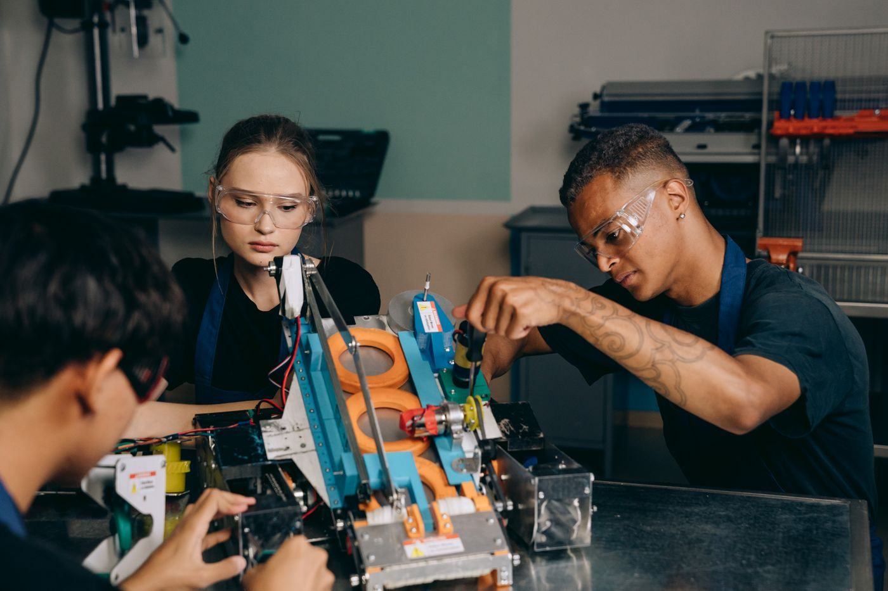

Home › Opleidingen › Techniek & engineering

Opleidingen in Techniek & engineering
Machines, energie, elektronica en materialen ontwerpen en maken. Hier staan alle 206 opleidingen in deze groep, op mbo, hbo en universiteit.
Wat kun je ermee?
- Ingenieur of ontwerper
- Technisch adviseur
- Productiemanager
- Onderzoeker in de industrie
Op mbo (161)
- Aankomend medewerker maritiem
- Aankomend militair maritiem
- Aankomend onderofficier maritiem
- Adviseur mobiliteitsbranche
- Airco/warmtepompmonteur
- Allround constructiewerker
- Allround keukenmonteur
- Allround lasser
- Allround machineoperator houttechniek
- Allround medewerker maritieme techniek
- Allround medewerker metaal- en productietechnologie
- Allround medewerker productietechniek
- Allround Montagemedewerker houttechniek
- Allround monteur mobiele werktuigen
- Allround operationeel technicus
- Allround pijpenbewerker
- Allround plaatwerker
- Allround precisieverspaner
- Allround technicus voertuigen en mobiele werktuigen
- Allround uurwerktechnicus
- Allround vakkracht onderhoud- en klussenbedrijf
- Allround verspaner
- Assistent installatie- en constructietechniek
- Assistent metaal-, elektro- en installatietechniek
- Assistent mobiliteitsbranche
- Assistent procestechniek
- Autoschadehersteller
- Autospuiter
- Autotechnicus
- Basis technicus voertuigen en mobiele werktuigen
- Basislasser
- Basistechnicus voertuigen en mobiele werktuigen
- Bedrijfsautotechnicus
- Biotechnicus
- Commercieel technicus engineering
- Constructie repair specialist
- Constructie- en plaattechnoloog
- Constructiewerker
- Drone-operations specialist
- Eerste autoschadehersteller
- Eerste Autoschadetechnicus
- Eerste Autospuiter
- Eerste Autotechnicus
- Eerste Fietstechnicus
- Eerste monteur elektrotechniek
- Eerste monteur elektrotechnische industriële installaties en systemen
- Eerste monteur elektrotechnische systemen
- Eerste monteur gas-, water- en warmtedistributie
- Eerste monteur gas-, water- of warmtedistributie
- Eerste monteur installatietechniek
- Eerste monteur koude- en klimaatsystemen
- Eerste monteur laagspanningsdistributie
- Eerste monteur luchtvaartuigen
- Eerste monteur mechatronica
- Eerste monteur middenspanningsdistributie
- Eerste monteur service en onderhoud elektrotechniek
- Eerste monteur service en onderhoud elektrotechniek en instrumentatie
- Eerste monteur service en onderhoud werktuigkundige installaties
- Eerste Monteur utiliteit
- Eerste monteur vliegtuigonderhoud
- Eerste Scootertechnicus
- Eerste verbrandingsmotortechnicus
- Elektrotechnicus
- Elektrotechnicus service en onderhoud
- Engineer maritieme techniek
- Fietstechnicus
- Immersief technicus
- Industrieel lakverwerker
- Keukenmonteur
- Leidinggevende van technici
- Machineoperator houttechniek
- Machineoperator houtverwerkende industrie
- Machinist hijswerk
- Machinist railvervoer
- Manager mobiliteitsbranche
- Maritiem officier alle schepen
- Maritiem officier alle schepen nautisch, koopvaardij
- Maritiem officier alle schepen technisch
- Maritiem officier kleine schepen nautisch, koopvaardij
- Maritiem officier kleine schepen technisch
- Mechanisch operator A
- Mechanisch operator B
- Medewerker maritieme techniek
- Medewerker metaal- en productietechnologie
- Medewerker Operationele techniek
- Medewerker productietechniek
- Meewerkend leidinggevende algemeen schoonmaakonderhoud
- middenkaderfunctionaris smart building
- Montagemedewerker houttechniek
- Monteur elektrotechniek
- Monteur elektrotechnische installaties
- Monteur elektrotechnische systemen
- Monteur gas-, water- en warmtedistributie
- Monteur gas-, water- of warmtedistributie
- Monteur installatietechniek
- Monteur koude- en klimaatsystemen
- Monteur laagspanningsdistributie
- Monteur mechatronica
- Monteur middenspanningsdistributie
- Monteur mobiele werktuigen
- Monteur onderhoud elektrotechniek
- Monteur service en onderhoud installaties en systemen
- Monteur werktuigkundige installaties
- Nabewerker
- Operationeel technicus
- Operator C
- Orthopedisch Technicus
- Orthopedisch technisch medewerker
- Orthopedisch technisch specialist
- Parts-/baliemedewerker
- Pianotechnicus
- Pijpenbewerker
- Plaatwerker
- Plafond- en wandmonteur
- Procesoperator A
- Procesoperator B
- Productietechnicus
- Researchinstrumentmaker
- Scheepswerktuigkundige alle schepen
- Scheepswerktuigkundige kleine schepen
- Schipper-machinist beperkt vaargebied
- Schipper-machinist beperkt werkgebied
- Scootertechnicus
- Servicemonteur koude- en klimaatsystemen
- Stuurman-scheepswerktuigkundige visserschepen SW5
- Stuurman-scheepswerktuigkundige vissersschepen SW5
- Stuurman-werktuigkundige kleine schepen
- Stuurman-werktuigkundige zeevisvaart SW6
- Technicus avionica
- Technicus avionica luchtvaartuigen
- Technicus elektrotechniek
- Technicus elektrotechnische industriële installaties en systemen
- Technicus elektrotechnische industriële systemen en installaties
- Technicus engineering
- Technicus gas
- Technicus human technology
- Technicus industriële koude- en klimaatsystemen
- Technicus mechanica
- Technicus mechanica luchtvaartuigen
- Technicus mechatronica
- Technicus mechatronica systemen
- Technicus metaal- en productietechnologie
- Technicus mobiele werktuigen
- Technicus service en onderhoud elektrotechniek en instrumentatie
- Technicus service en onderhoud mechatronica
- Technicus service en onderhoud werktuigkundige installaties
- Technicus water
- Technisch Leidinggevende
- Technisch oogheelkundig Assistent
- Technisch specialist autoschadeherstel
- Technisch Specialist Personenauto's
- Technisch specialist verbrandingsmotoren
- Technisch specialist voertuigen en mobiele werktuigen
- Vakkracht industrieel lakverwerker
- Verbrandingsmotortechnicus
- Verspaner
- Verspaningstechnoloog
- Werkvoorbereider fabricage
- Werkvoorbereider houttechniek
- Werkvoorbereider installaties
- Werkvoorbereider meubelindustrie/(scheeps)interieurbouw
Op hbo (18)
- Automotive
- Bachelor of Business Administration in Fashion
- Chemie
- Chemische Technologie
- Elektrotechniek
- Embedded Systems Engineering
- Energie en Duurzame Ontwikkeling
- Engineering
- Fashion & Textile Technologies
- Food Commerce & Technology
- Geo Maps & Data
- Industrieel Product Ontwerpen
- Luchtvaarttechnologie
- Maritieme Techniek
- Maritieme Techniek / Scheepsbouwkunde
- Mechatronica
- Voedingsmiddelentechnologie
- Werktuigbouwkunde
Op wo (universiteit) (17)
- Advanced Technology
- Agrotechnologie
- Circular Engineering
- Creative Technology
- Electrical Engineering
- Food Technology
- Industrial Design
- Industrial Design Engineering
- Industrieel Ontwerpen
- Luchtvaart- en Ruimtevaarttechniek
- Maritieme Techniek
- Mechanical Engineering
- Molecular Science and Technology (joint degree)
- Scheikundige Technologie
- Science, Technology & Innovation
- Software Development and Testing (joint degree)
- Werktuigbouwkunde
Weet je nog niet welke kant je op wilt? De Padvinder laat in 5 minuten zien welke richtingen bij je passen.
Start de Padvinder